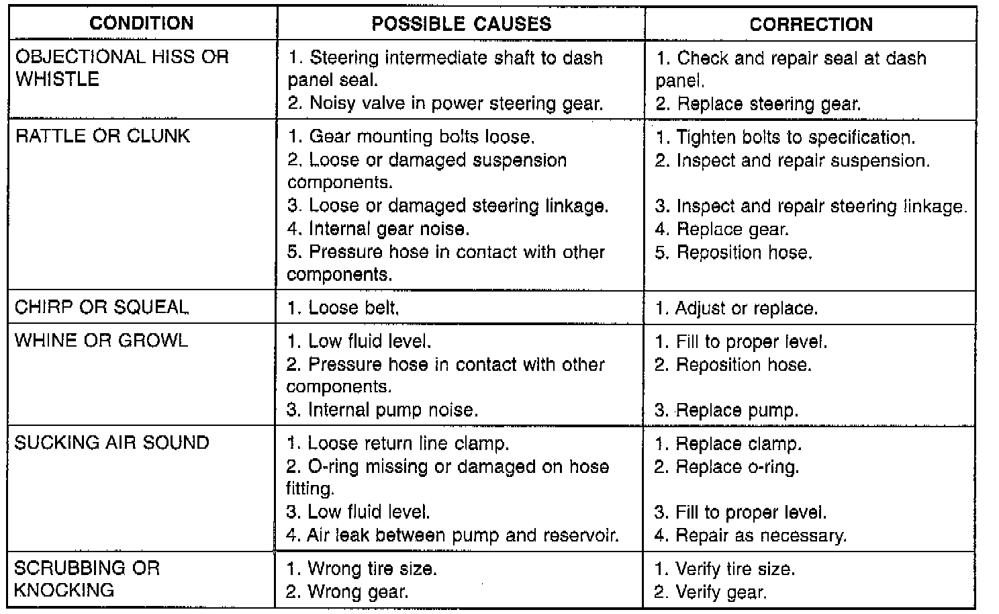

Steering Noise

There is some noise in all power steering systems. One of the most common is a hissing sound evident at a standstill parking. Or when the steering wheel is at the end of it's travel. Hiss is a high frequency noise similar to that of a water tap being closed slowly. The noise is present in all valves that have a high velocity fluid passing through an orifice. There is no relationship between this noise and steering performance.